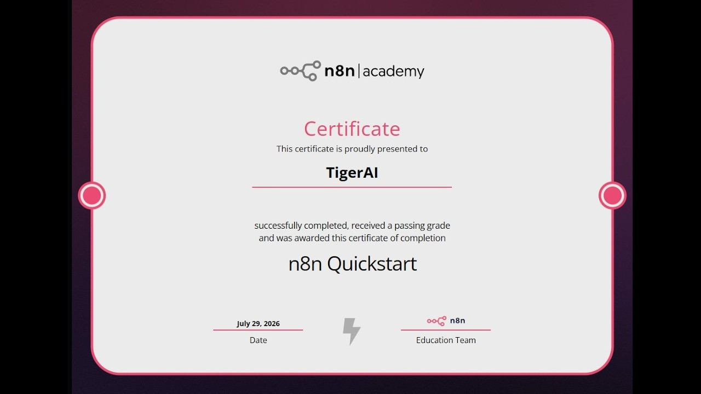

YouTube｜MagicAIAcademy：n8n Academy 新版證照考試完整教學

MagicAIAcademy 發布 2:22:10 的中文教學影片《n8n Academy 新版證照考試完整教學｜零基礎考證照流程完整教學(不含解答)》。影片主軸是帶觀眾從 n8n Academy 入口開始，依照官方 learning app 的任務一步步建立 workflow，並理解考試所需概念。影片明確標註不含解答，較適合當作「跟做導覽」與術語翻譯。
影片章節重點
- 00:00 開場、n8n Academy 入口、繁中翻譯站與課程註冊。
- 00:19–19:00 認識 n8n 畫布、workflow name、節點分類、trigger node、workflow settings。
- 19:00–39:00 第一個工作流：Manual Trigger、Hacker News、HTTP/Data Table、Upsert、IF 篩選、Edit Fields、Code 計算、Discord webhook 與 Schedule。
- 39:00–83:00 n8n 資料結構：陣列、物件、物件陣列、HTML/XML 節點、日期資料、二進位檔案、圖片/CSV、Split Out、Merge、Loop 與批次處理。
- 83:00–87:00 錯誤處理：Always output data、continue on fail、retry、Error output 與 Error Trigger。
- 87:00–130:00 報表實作：客戶/訂單資料、Data Table 匯入、Merge、訂單總額、CSV 匯出、區域彙整、報表上傳與通知。
- 130:00–141:00 正式考試流程與進度提醒。
- 131:28–141:00 AI Agent：Chat Trigger、AI Agent、Chat Model、Simple Memory、Data Table / HTTP tools 與 system message。
- 141:00 結語與證照完成畫面。
官方來源查核
- `apps.learn.n8n.io/learner-dashboard/` 可連線，為 n8n learning app 入口。
- n8n 官方 docs 導覽列包含 Academy 連結，指向 `learn.n8n.io`。
- n8n 官方首頁定位為 AI Workflow Automation Platform。
- 影片提到的 `n8n-academy-zh.pages.dev` 登入頁標明「課程版權屬 n8n Academy；本站為非官方繁中翻譯，免費、非商業，僅供學習」。因此它應被視為輔助翻譯站，而不是官方 n8n Academy 本體。
適合保存的學習價值
這支影片的價值在於把 n8n Academy 新版任務拆成可跟做的中文流程，尤其適合：
- 第一次接觸 n8n，尚不熟悉 Canvas、Node、Execution、Data Table 的學員。
- 想理解 n8n 考試會要求哪些能力，而不是直接背答案的人。
- 想建立「資料抓取 → 條件篩選 → 彙整 → 檔案輸出 → 通知 → 錯誤監控」完整自動化工作流的人。
- 想把 n8n AI Agent 接到 Data Table / HTTP tools，做簡單工具型代理的人。
風險與限制
- 影片不是官方 n8n 發布；介面、題目與考試流程可能隨 n8n Academy 更新而變動。
- 影片說明不含答案，實作時仍應自行完成官方任務與測驗。
- Discord webhook、Gemini/API key、Data Table、外部服務授權等步驟要避免在錄影、截圖或課堂中洩漏憑證。
- 翻譯站為非官方輔助資源；正式學習紀錄與證照仍以 n8n 官方 learning app 為準。